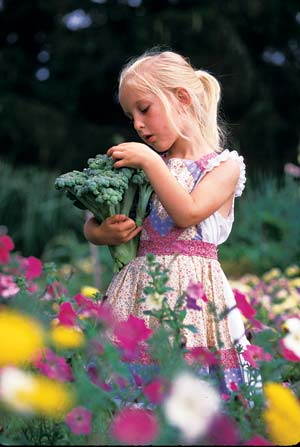
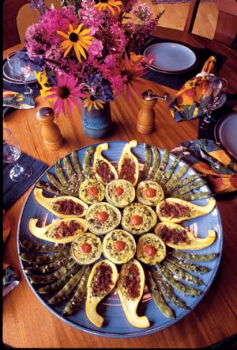

I’ve never been much of a city person. Even when I was growing up in the suburbs north of San Francisco, I was roaming the nearby creeks and hills and wanted to be a naturalist. I started my first vegetable garden in our tiny back yard at age 8, expanded up the street in front of the neighbor’s house, and eventually had half the neighborhood kids working with me as garden helpers.
After a bit of college and a lot of travel as a scientific field worker, I got married and began a slightly more sedentary life. My wife, Maggie, and I lived in a series of rental houses, each more rural than the one before. In each place, we left behind a larger garden than we found when we moved in.
Our adventures in homesteading started when we took positions as resident biologists at Audubon Canyon Ranch, a beautiful heron and egret rookery on the infamous San Andreas Fault, near Point Reyes National Seashore in California. Our son, Pippin, was born there, and that’s where we lived until he was 5, soaking in the beauty of redwood canyons, marshes, beaches and lagoons.
During that time we planted our first big vegetable garden, bought goats and sheep, started an education and docent-training program and began writing about our homesteading successes and failures.
Our desire to follow a self-sufficient lifestyle was growing stronger over time. I wrote a book, Living Water, about journeying to the Sierra Nevada to experience nature as a summer visitor. My second book, This Living Earth, chronicled our efforts to know the natural world in our own back yard intimately. But we still desired to actually live the principles we were discovering at work in nature, as well as write about them. Those first years at Audubon Canyon Ranch gave us that opportunity. Our book about those experiences, Almost Home: A Life-Style, was published in 1975 and that same year, we were finally able to move onto land of our own.
When we first saw our 180 acres in the wild, rugged hills of Sonoma County’s wine country, it seemed like an unattainable paradise. It had hardly any arable soil and no house, power or water. To buy it, we needed a large down payment and a 10-year mortgage with monthly payments far larger than my freelance photographer income.
But over the next 10 years we came to believe in the laws of manifestation: Visualize exactly what you want to do in life, and the means arrive. We started to call it our “magic mailbox.” We received the exact amount of the down payment from the first royalty check from This Living Earth. Then, a neighboring landowner purchased an additional 40 acres adjacent to us, and invited us to live rent-free in an old cabin on the property. I also landed a three-year assignment with Reader’s Digest for a book called Back To Basics. The assignment was to photograph all the lifestyle projects we had already decided to do on the farm! It was amazing; most of our early efforts at homesteading were paid for in advance. That’s how we began our new homestead, which we named Pippindale, after our son.
One of the things we visualized doing on our new homestead was teaching. I’ve always thought that people teach best at the threshold of their own learning, so we started teaching gardening and homesteading skills even as we were learning them ourselves.
The first order of business was to start an orchard. We chose the only arable land on the property, a fertile swale at the bottom of a side hill, and constructed an 8-foot deer fence with posts, hand split from redwood. We drilled a well and installed a water system, but water is always precious in the summer-dry California hills, so we opted for a multiuse plan. We decided to use the orchard and vineyard as our vegetable garden until the growing trees gradually shaded the garden out.
I gathered scion, or grafting, wood from the fruit trees my family had harvested since my childhood. I used a grafting technique my grandpa had taught me, and seedling trees I propagated myself, to start about 75 fruit and nut trees. Digging that many holes in unbroken ground would have been an arduous task, so we devised our first Pippindale class, “Orchard Propagation.” Everyone went home with a successfully grafted rootstock of their own, and they left us with 75 holes dug, planted and filled almost effortlessly. We laughingly called it our “class in graft!”
We knew it would take about 10 years for these newly planted trees to bear fruit, so in the meantime I located abandoned orchards in the Santa Rosa Valley. Tons of Bartlett pears and French prunes lay on the ground unused every summer, more than enough to use for canning and drying. I also discovered abandoned vineyards, which Italian immigrant families had used to make their own wine. I began collecting grape cuttings for my own vineyard, and by the time my terraced hillside vineyard began bearing fruit, I had amassed 42 grape varieties - an almost complete representation of the history of California viticulture.
When the Pippindale garden was complete, it included the vineyard plus an additional 150 fruit and nut trees of 100 varieties. We had plums, pears, apples, cherries, persimmons, quince, peaches, figs, walnuts and almonds - as well as 10 kinds of berries. Among the trees, we grew vegetables, flowers and most of the fodder for our small milk goat herd.
Our new garden prospered. We filled the basement with canned fruit and juices, often as much as 400 quarts a year. A large tin barn roof made a perfect stage for drying pears and peaches on original redwood drying trays we got from an old prune ranch. We learned how to dry our own prunes and how to make our own raisins from seedless grape varieties.
As the food began pouring in from our garden, the familiar flavors rekindled rich memories from my childhood family gardens. There are qualities of flavor, aroma and sweetness which only can come from fruits and vegetables that are lovingly grown and freshly picked.
The animal business started innocently enough. We got our first goat from friends and waited for the milk to flow. We were so green; we didn’t even know that animals had to be bred to make milk! Later, after we’d bred the goat, and the first kids were born, we had to face the next big lesson in keeping animals for dairy products: deciding what to do with all the offspring, especially the males. We wanted to take full responsibility for the meat we ate, so I learned slaughtering and butchering skills from a Bulgarian friend who had grown up on a farm in the old country. We kept sheep to graze the dry grass low in summer for fire protection, and raised chickens for both meat and eggs.
We tanned hides and made our own soap. Maggie dyed wool from our sheep with homemade plant dyes, and used it for spinning and weaving. We established beehives for honey. And we made cheese, lots of cheese.
I learned cheese making by reading and experimenting. Because we didn’t have a separator to remove the cream from naturally homogenized goat’s milk, we were confined to soft, rather than aged cheeses. I still made about six kinds every week, though, including my own versions of Camembert and Roquefort. In summer, we cured the rounds in the coolest place we could find - a basket lowered down into the cabin’s original well, now dry.
In the end, we achieved almost total food self-sufficiency. We grew all our fruits and vegetables, and raised animals for meat and milk. We raised most of our own goat food, and our sheep and chickens were free-range. We bought salt, commercial rennet for cheese making, canning lids, wheat for flour - and that was about it. We even supplemented our bread baking with flour we ground by hand from corn, fava, soy and amaranth.
Homesteading on such a scale is hard work. No wonder pioneer families had lots of kids! We managed the labor force in a different way. Although we never established an official apprenticeship program, each year young people would somehow find us, usually two or three a season. Officially, they came to learn about gardening and natural history, but there was always a deeper reason, usually associated with a need to heal or a desire to grow. Our visitors included students uncertain about their path in college, refugees from broken relationships, and people stressed out by life in the urban world. They all came to live in this beautiful landscape of rolling hills and were healed by the garden.
Each person who came to the farm brought a new dimension into our lives. Two different friends named Greg added to the richness and depth of our spiritual practices. Jana came with added horticultural skills and, with her friend Karren, taught us the joy of Balkan folk music and dancing.
Those years were filled with learning and inspiration. But like most youthful utopian journeys, our ship ran aground on some rough reefs, and Maggie and I went through a painful separation.
Eventually, I married again and my wife, Joanie, and I had a daughter, Carina. We lived on the farm, but life in California had become so costly that we began to realize we couldn’t afford to build a house on our land.
The only thing that doesn’t change is change itself, the old saying goes, and so change we did. Joanie and I made the hard decision to leave not only this beautiful land, but also California. But where would we move? We had no plan for where we might go.
Once again the laws of manifestation delivered a serendipitous answer. I had become increasingly interested in the genetic diversity of crops, first through my stomach - by virtue of my Italian family’s love of diverse foods - and later through an intellectual understanding of the genetic erosion in our food supply. I joined a fledgling organization called the Seed Savers Exchange, which was then located in Missouri. Eventually Seed Savers founders Kent and Diane Whaley moved to Decorah, in northeast Iowa, where they planted their first preservation garden in 1985. National Gardening magazine asked me to travel there to photograph an article on the garden.
When I walked into the long five-acre field along the Upper Iowa River, I felt like a kid in a candy store. Here were more than 1,500 endangered vegetable varieties growing in the most beautiful soil I had ever seen in my life - I needed to get my hands into dirt like that in the worst way. I could see that they needed help with the project, so I asked if I could come run the garden for them the following year for free.
Joanie and I came to Decorah the following summer, renting a small house in town while I helped with the Seed Savers garden. After only two weeks in Decorah, we decided to move here permanently. That was 20 years ago, and we never looked back. The same year we moved, Seed Savers bought Heritage Farm, and for the next eight years I worked as manager of the preservation gardens, where we had 15,000 endangered vegetable varieties from all over the world. I took photographs of heirloom vegetables, which helped put Seed Savers on the map as part of a resurgent global interest in genetic preservation, and also established me as a horticultural photographer. Joanie and I moved onto an 11-acre Norwegian homestead we bought for about the same price as the septic system we would have had to build on our land in California. This gave us breathing room to learn the lay of the land and the ways of a new climate.
Having lived our entire lives with the mediating effect of the Pacific Ocean, we were taken aback by the abrupt temperature fluctuations of the plains - once 50 degrees in a single hour - and there were nights that first winter when the thermometer dipped to 35 below zero. But the first farm was a perfect place to experiment and learn. Iowa is almost as foreign to Californians as another planet, and we quickly learned two important lessons: listen and observe. We learned a lot from the advice of new friends and neighbors, who taught us what grows well here, and how to build a root cellar for storing fresh food in winter. We soon learned who had extra apples for cider, and who raised free-range eggs.
Almost all the weeds and pests were new to us, but by carefully observing life cycles and behaviors, we were soon able to determine the best times for successful organic or mechanical interventions. We soon felt we had a reasonable handle on growing and storing food in a climate that was tropical in summer and arctic in winter. The full measure of this new knowledge could not mature, however, until we settled on a permanent homestead.
After we’d been in Iowa four years, we found a beautiful farm available from a dairyman who was retiring and moving to town. It had 220 acres of rolling hills, forest and farm fields, with the region’s second largest river running through it. The property also contained a perfect, five-acre valley that was protected from the violent westerly thunderstorms that ravaged our first, more exposed, farm. We looked at the land at 9 p.m. one summer night and had the papers signed by 9 a.m. the next morning. The original farmhouse was right on the county road and didn’t quite serve our needs, but we had our sights on that protected little valley. The following year we built a house there and began establishing an orchard, vineyard and garden, as well as a large root cellar.
We began to realize that we were not the same people who lived a subsistence life at Pippindale. My life as a photographer was now much fuller, and I was still managing a huge garden project and crew at Seed Savers Exchange. Joanie had a busy massage practice, Pippin was in high school, and Carina was growing fast. There simply was not time to do everything for ourselves as we did in California. There was also a choice to make about animals.
At Pippindale, we’d gone back and forth about raising animals. Raising our own meat and dairy products taught us that eating high on the food chain is costly in terms of our footprint on the land, and sometimes we thought that our diet contained too much meat and dairy. Here in Iowa, we had already chosen to rent out the original farmhouse, along with its attendant dairy barn and outbuildings, so if we wanted animal pens and shelters, we would have to build new ones. We also quickly discovered that we were surrounded by neighbors eager to sell organic and free-range meat and poultry. We decided to eat less meat, and buy what we did eat from friends and neighbors.
With a large garden and root cellar, we now enjoy nearly as much fresh year-round produce as we had in California, in addition to what we dry, freeze and can. The orchard and vineyard are less varied here in my Zone 3 valley because far fewer kinds of fruit and grapes survive winter. However, we still enjoy a wide variety of both, as well as an ample selection of berries. All this produce shows the benefits of healthy soil and organic practices, and having a diversity of ingredients on hand year-round makes for easy and creative cooking. Because I do so much horticultural photography, I’ve devoted much of my newly developed garden space to ornamentals. Over the years, both flower and vegetable gardens have provided ever-changing palates for the photographs and accumulating experience for the articles that provide my livelihood.
My freelance lifestyle allows me to use the homestead as a source of income, as well as a partial tax deduction. By growing healthful food and living in the midst of a magnificent natural landscape, staying home provides recreation and vacation as well as work, all of which combine to be far cheaper than travel and better for health than expensive insurance.
This is not the “perfect couple homestead story.” Instead, it’s a story of personal growth and spiritual development. All of us - spouses, friends and apprentices alike - have moved into new chapters of life. Some are making a large impact on the world as a result of what we all learned on the land together. But most importantly, we are friends for life. The garden in California is long abandoned; only the most drought-hardy trees and a few overgrown grape vines survive. But gardens come and go. Friendships have been the true fruits of our gardens.
|
DAVID CAVAGNARO David Cavagnaro’s house in Iowa. |
DAVID CAVAGNARO For 30 years, Cavagnaro has grown much, sometimes all, of his family’s food. |
DAVID CAVAGNARO Sonoma County, Calif. The garden and orchard take shape. |
|
DAVID CAVAGNARO On this homestead, David and Maggie raised all their own food, including fruit, vegetables, meat and dairy products. |
DAVID CAVAGNARO A bountiful garden with 150 fruit and nut trees! |
DAVID CAVAGNARO Maggie colors yarn with homemade plant dye. |
|
DAVID CAVAGNARO Drying peaches and pears for storage. |
DAVID CAVAGNARO David’s son, Pippin, in the middle of a building project. |
 DAVID CAVAGNARO David’s daughter, Carina, picks broccoli. |
|
DAVID CAVAGNARO Joanie and Carina at the cabin in California. |
 DAVID CAVAGNARO One of many delicious ways David prepares fresh vegetables - stuffed summer squash with Romano beans. |
DAVID CAVAGNARO A selection of Cavagnaro’s delicious heirloom Italian vegetables. |